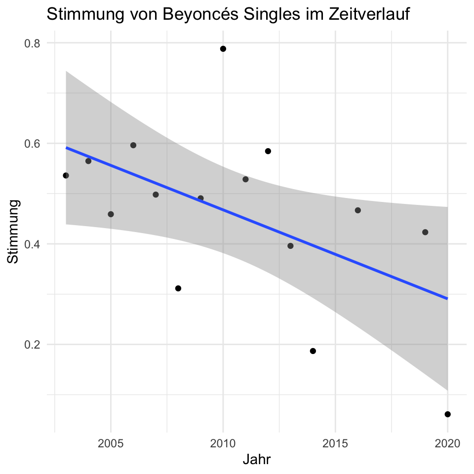

library(tidyverse)
theme_set(theme_minimal())1 Einführung
1.1 Daten aus dem Internet laden
Quelle: https://github.com/rfordatascience/tidytuesday/tree/master/data/2021/2021-09-14
1.2 Beyoncé-Songs: Alles in einem Rutsch wie auf den Folien
read_csv("https://raw.githubusercontent.com/rfordatascience/tidytuesday/master/data/2021/2021-09-14/billboard.csv") %>%
left_join(read_csv("https://raw.githubusercontent.com/rfordatascience/tidytuesday/master/data/2021/2021-09-14/audio_features.csv")) %>%
mutate(year = as.numeric(str_sub(week_id, start = -4, end = -1))) %>%
filter(performer == "Beyonce") %>%
group_by(year) %>%
summarise(mean_valence = mean(valence, na.rm = T)) %>%
ggplot(aes(x = year, y = mean_valence)) +
geom_point() +
geom_smooth(method = "lm") +
labs(x = "Jahr", y = "Stimmung", title = "Stimmung von Beyoncés Singles im Zeitverlauf")
1.3 Besser: in Einzelschritten
Daten direkt aus dem Internet lesen und ansehen
billboard100 <- read_csv("https://raw.githubusercontent.com/rfordatascience/tidytuesday/master/data/2021/2021-09-14/billboard.csv")
billboard100# A tibble: 327,895 × 10
url week_id week_…¹ song perfo…² song_id insta…³ previ…⁴ peak_…⁵ weeks…⁶
<chr> <chr> <dbl> <chr> <chr> <chr> <dbl> <dbl> <dbl> <dbl>
1 http:/… 7/17/1… 34 Don'… Patty … Don't … 1 45 34 4
2 http:/… 7/24/1… 22 Don'… Patty … Don't … 1 34 22 5
3 http:/… 7/31/1… 14 Don'… Patty … Don't … 1 22 14 6
4 http:/… 8/7/19… 10 Don'… Patty … Don't … 1 14 10 7
5 http:/… 8/14/1… 8 Don'… Patty … Don't … 1 10 8 8
6 http:/… 8/21/1… 8 Don'… Patty … Don't … 1 8 8 9
7 http:/… 8/28/1… 14 Don'… Patty … Don't … 1 8 8 10
8 http:/… 9/4/19… 36 Don'… Patty … Don't … 1 14 8 11
9 http:/… 4/19/1… 97 Don'… Teddy … Don't … 1 NA 97 1
10 http:/… 4/26/1… 90 Don'… Teddy … Don't … 1 97 90 2
# … with 327,885 more rows, and abbreviated variable names ¹week_position,
# ²performer, ³instance, ⁴previous_week_position, ⁵peak_position,
# ⁶weeks_on_chartaudio <- read_csv("https://raw.githubusercontent.com/rfordatascience/tidytuesday/master/data/2021/2021-09-14/audio_features.csv")
audio# A tibble: 29,503 × 22
song_id perfo…¹ song spoti…² spoti…³ spoti…⁴ spoti…⁵ spoti…⁶ spoti…⁷ dance…⁸
<chr> <chr> <chr> <chr> <chr> <chr> <dbl> <lgl> <chr> <dbl>
1 -twist… Bill B… -twi… [] <NA> <NA> NA NA <NA> NA
2 ¿Dònde… Augie … ¿Dòn… ['nove… <NA> <NA> NA NA <NA> NA
3 ......… Andy W… ....… ['adul… 3tvqPP… https:… 166106 FALSE The Es… 0.154
4 ...And… Sandy … ...A… ['rock… 1fHHq3… <NA> 172066 FALSE Compel… 0.588
5 ...Bab… Britne… ...B… ['danc… 3MjUtN… https:… 211066 FALSE ...Bab… 0.759
6 ...Rea… Taylor… ...R… ['pop'… 2yLa0Q… <NA> 208186 FALSE {'albu… 0.613
7 '03 Bo… Jay-Z … '03 … ['east… 5ljCWs… <NA> 205560 TRUE The Bl… NA
8 '65 Lo… Paul D… '65 … ['albu… 5nBp8F… https:… 219813 FALSE Radio … 0.647
9 '98 Th… Traged… '98 … ['engl… <NA> <NA> NA NA <NA> NA
10 'Round… Big Si… 'Rou… [] <NA> <NA> NA NA <NA> NA
# … with 29,493 more rows, 12 more variables: energy <dbl>, key <dbl>,
# loudness <dbl>, mode <dbl>, speechiness <dbl>, acousticness <dbl>,
# instrumentalness <dbl>, liveness <dbl>, valence <dbl>, tempo <dbl>,
# time_signature <dbl>, spotify_track_popularity <dbl>, and abbreviated
# variable names ¹performer, ²spotify_genre, ³spotify_track_id,
# ⁴spotify_track_preview_url, ⁵spotify_track_duration_ms,
# ⁶spotify_track_explicit, ⁷spotify_track_album, ⁸danceabilityDaten kombinieren und neue Year Variable aus der Spalte week_id erstellen
song_data <- billboard100 %>%
left_join(audio) %>%
mutate(year = as.numeric(str_sub(week_id, start = -4, end = -1)))Für Beyonce Jahresmittelwerte der Variable valence berechnen So sehen die Mittelwerte aus
per_year <- song_data %>%
filter(performer == "Beyonce") %>%
group_by(year) %>%
summarise(mean_valence = mean(valence, na.rm = T))
per_year# A tibble: 16 × 2
year mean_valence
<dbl> <dbl>
1 2003 0.536
2 2004 0.565
3 2005 0.459
4 2006 0.596
5 2007 0.498
6 2008 0.311
7 2009 0.491
8 2010 0.788
9 2011 0.528
10 2012 0.584
11 2013 0.396
12 2014 0.187
13 2015 NaN
14 2016 0.467
15 2019 0.423
16 2020 0.0611Grafik aus per_year erstellen
per_year %>%
ggplot(aes(x = year, y = mean_valence)) +
geom_point() + # Punktediagramm
geom_smooth(method = "lm") + # Regressionsgerade
labs(x = "Jahr", y = "Stimmung", title = "Stimmung von Beyoncés Singles im Zeitverlauf")
1.4 BONUSAUFGABE:
Erstellen sie die Grafik für einen anderen Performer und/oder für eine andere Variable, z.B. loudness, tempo, danceability, speechiness